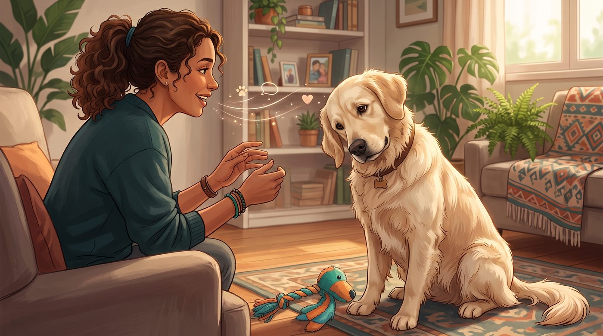
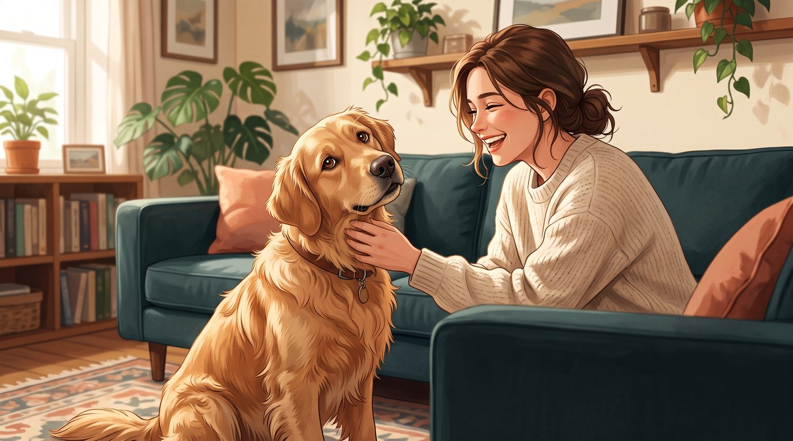
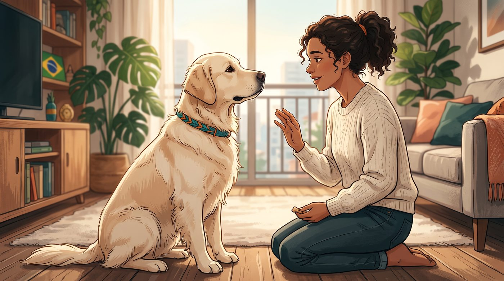
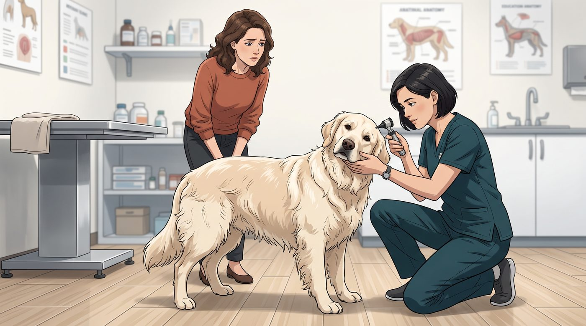
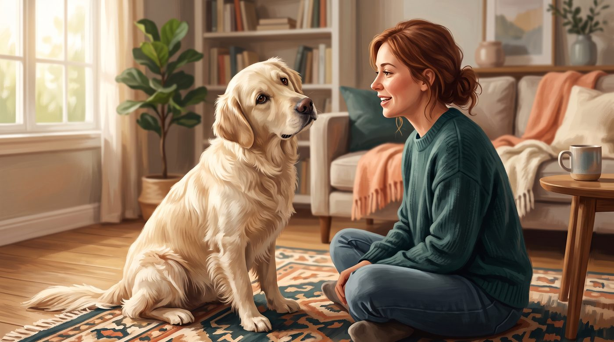

Se você já perguntou "vamos passear?" e recebeu aquele olhar atento, com a cabeça inclinada para o lado, provavelmente sentiu que seu cachorro estava tentando entender cada palavra.
A cena é encantadora. Mas será que ele está confuso, curioso ou realmente tentando compreender o que você está dizendo?
A resposta mais honesta é: pode ser um pouco de tudo isso. A inclinação da cabeça parece estar relacionada à audição, à visão, ao processamento de informações e até à maneira como nós reagimos ao comportamento. A ciência ainda não encontrou uma explicação única para todos os cães.
1. Ele pode estar tentando ouvir melhor
O motivo mais conhecido está relacionado à maneira como os cães percebem os sons.
Quando você fala, seu cachorro não escuta apenas as palavras. Ele também percebe o tom de voz, a intensidade, a direção e as mudanças na entonação. Ao inclinar a cabeça, pode estar ajustando a posição das orelhas para captar melhor determinado som.
Isso é especialmente interessante porque as orelhas dos cães funcionam de maneira diferente das nossas. Dependendo do formato e da posição delas, algumas frequências podem ser mais difíceis de localizar.
Por isso, quando você chama pelo nome ou fala algo inesperado, ele pode inclinar a cabeça como quem pensa: "De onde veio esse som? O que você quis dizer?"
Essa explicação faz sentido, mas não significa que toda inclinação tenha necessariamente o objetivo de localizar um ruído. O comportamento também pode envolver outros sentidos e processos mentais.
2. Ele também pode estar tentando enxergar melhor o seu rosto
Existe outro detalhe que muita gente não percebe: o focinho pode atrapalhar parte do campo de visão do cachorro.
Dependendo do formato da cabeça e do comprimento do focinho, inclinar a cabeça pode ajudá-lo a enxergar melhor a sua boca, seus olhos e suas expressões faciais.
E isso importa muito porque os cães não interpretam apenas o que falamos. Eles também observam:
- Nossa expressão
- O movimento dos olhos
- A posição do corpo
- Os gestos das mãos
- O tom de voz
- A direção do nosso olhar
Então, quando ele inclina a cabeça enquanto você conversa, talvez esteja tentando juntar todas essas informações para entender melhor a situação.
É como se ele não estivesse apenas ouvindo você, mas também tentando "ler" a conversa com os olhos.
3. Algumas palavras despertam associações na memória

Seu cachorro talvez não compreenda uma conversa inteira como um ser humano, mas pode aprender a reconhecer palavras, sons e expressões associados a experiências.
"Passear", "petisco", "carro", "mamãe", "papai" e o próprio nome podem despertar expectativas porque estão ligados a acontecimentos importantes na rotina.
Imagine que você diga: "Vamos dar uma voltinha?"
Se essa frase costuma ser seguida por uma caminhada, seu cachorro pode tentar identificar o que está acontecendo. A inclinação da cabeça pode aparecer justamente nesse momento de atenção e processamento.
Um estudo com cães que conseguiam aprender nomes de brinquedos observou que eles inclinavam a cabeça com mais frequência quando ouviam palavras conhecidas relacionadas aos objetos. Isso sugere que, em alguns casos, o gesto pode estar ligado à tentativa de conectar um som a uma informação armazenada na memória.
Mas existe uma ressalva importante: nem todo cachorro que inclina a cabeça está necessariamente compreendendo uma palavra específica. O comportamento pode ocorrer diante de sons novos, vozes diferentes ou simplesmente de uma interação que despertou sua atenção.
4. Ele percebe que você gosta quando isso acontece

Agora vem uma parte muito curiosa da relação entre cães e humanos.
Quando seu cachorro inclina a cabeça, é comum que você sorria, ria, faça carinho ou repita a frase. Sem perceber, você pode estar ensinando que aquele gesto produz uma resposta positiva.
Os cães aprendem por associação. Se inclinar a cabeça faz você falar mais, oferecer atenção ou demonstrar carinho, ele pode começar a repetir o comportamento.
Isso não significa que ele esteja "fingindo" ou manipulando você. Significa apenas que ele percebeu: "Quando faço isso, meu humano interage comigo."
Com o tempo, alguns cães passam a inclinar a cabeça com mais frequência justamente porque a reação das pessoas reforça o comportamento. Em determinados casos, o gesto pode até ser ensinado como um truque.
5. Por que ele inclina sempre para o mesmo lado?

Talvez você já tenha percebido que seu cachorro quase sempre inclina a cabeça para a direita ou para a esquerda.
Isso também pode acontecer normalmente. Pesquisas observaram que alguns cães apresentam uma preferência consistente por determinado lado durante esse comportamento.
Uma das possibilidades estudadas é que essa preferência esteja relacionada à maneira como diferentes partes do cérebro processam sons e informações. Porém, ainda não existe uma explicação definitiva para o motivo de cada cachorro escolher um lado específico.
Portanto, se ele inclina sempre para a esquerda quando você fala, mas depois volta naturalmente à posição normal, isso não significa, por si só, que exista algum problema.
O mais importante é observar quando, por quanto tempo e em quais situações ele faz isso.
6. Quando a inclinação é normal e quando merece atenção?

A inclinação breve durante uma conversa, diante de um som diferente ou quando você chama o cachorro costuma ser um comportamento normal.
O sinal de alerta é quando ele passa a manter a cabeça inclinada constantemente, sem relação aparente com uma interação ou estímulo.
Nesse caso, a causa pode estar relacionada a problemas no ouvido ou no sistema vestibular, responsável pelo equilíbrio e pela orientação espacial.
Procure avaliação veterinária se a inclinação vier acompanhada de:
- Perda de equilíbrio
- Dificuldade para caminhar
- Quedas ou tropeços
- Andar em círculos
- Vômitos
- Movimentos rápidos e involuntários dos olhos
- Confusão ou desorientação
- Dor ou coceira intensa nas orelhas
- Dificuldade para ouvir
- Apatia ou mudança súbita de comportamento
Infecções no ouvido médio ou interno, alterações vestibulares e algumas condições neurológicas podem provocar uma inclinação persistente. Por isso, não é seguro interpretar todo tipo de inclinação como curiosidade ou fofura.
7. O que fazer quando ele inclina a cabeça para você?

Na maioria das vezes, você não precisa fazer nada além de aproveitar o momento.
Fale com ele de maneira tranquila, observe sua linguagem corporal e perceba se o gesto aparece em situações específicas. Talvez ele faça isso quando escuta o próprio nome, quando você muda o tom de voz ou quando reconhece uma palavra ligada a algo agradável.
Você também pode usar esse momento para fortalecer a comunicação:
- Chame-o pelo nome
- Use palavras curtas e consistentes
- Associe comandos a gestos
- Recompense comportamentos desejados
- Evite repetir a mesma ordem muitas vezes
- Observe se ele está relaxado ou demonstrando desconforto
E lembre-se: inclinar a cabeça não é necessariamente uma prova de que ele compreendeu exatamente o que você falou. É um sinal de atenção, mas deve ser interpretado junto com o restante do corpo.
Se as orelhas estão relaxadas, o corpo está solto e ele volta naturalmente à posição normal, provavelmente você está diante de mais um daqueles pequenos momentos de conexão que tornam a convivência com um cachorro tão especial.
Um gesto pequeno, uma comunicação enorme
Talvez seu cachorro não consiga responder com palavras, mas ele encontra outras formas de participar da conversa.
A cabeça inclinada, as orelhas atentas, o olhar fixo e o corpo voltado para você mostram que existe uma tentativa de interação. Às vezes, ele está tentando ouvir melhor. Outras vezes, pode estar associando uma palavra a uma experiência ou simplesmente reagindo à sua expressão.
O mais bonito é que, mesmo sem falar a mesma língua, vocês aprendem a se entender.
E, se a inclinação for repentina, persistente ou acompanhada de perda de equilíbrio, não espere que desapareça sozinha: procure um veterinário para investigar a causa.
Este conteúdo é educativo e não substitui uma avaliação veterinária. Em caso de sintomas persistentes, dor, alterações de equilíbrio ou mudança súbita de comportamento, procure atendimento profissional.
Fontes e referências
- Why Dogs Tilt Their Heads — VCA Animal Hospitals
- Why Do Dogs Tilt Their Heads? — American Kennel Club
- Why Do Dogs Tilt Their Heads? Causes and Meaning — PetMD
- Dog Head Tilt: Causes, Symptoms and Treatment — PetMD
- What Does That Head Tilt Mean? Brain Lateralization and Sex Differences in the Processing of Familiar Human Speech by Domestic Dogs — PMC